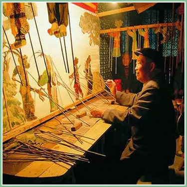

● 汉江皮影 ●
江汉平原皮影戏是一种古老的传统艺术。迄今已有300余年的历史，是指流行在湖北中南部沔阳(今仙桃市)、天门、潜江、监利、洪湖、京山、公安等县(市)具有相同艺术特征的皮影戏，江汉平原皮影戏是江汉人自己的"土电影"，深受老百姓的喜爱。江汉皮影尤以沔阳皮影戏最为著名，它融传统绘画、雕刻、美术于一体，集电影、电视动画于一身，具有浓郁民族气息，是中国艺术菀里的一朵奇葩。

民间传说
源于秦末"楚""汉"相争、张良情急之下用皮革来迷惑敌人的故事;汉武帝设帷招见已逝爱妃李夫人;农历七月十五"鬼节"招魂，农俗还愿;宫妃哄太子，桐叶剪人型，照在窗纱哄其开心等等，还有很多类似的民间传说。
宗教传说
与佛教有关，观音竹枝弄成影状来表演，吸引信徒，劝善说教;与儒教有关，传闻孔子样貌丑陋，讲学时挂着帘子，后来人们仿效其隔帘说书，称其"影子戏"，等等这些传说的依据极其少。
史料记载
据史书记载，春秋时期，即公元前445年至公元前396年期间，孔子的得意门生子夏在孝义讲学，为吸引更多人听他的演说，曾在夜晚利用"影乐"的形式聚众讲学。由于子夏从师于孔子，也会"乐、琴"，以影乐形式设讲，寓教于乐中，使"设教、乐琴、影乐"融为一体而成为"影、乐、教"的完善影戏形式。子夏讲学被当地人所喜爱，当地人学会了表演影乐的技法，随着时间的推移，影乐教的形式在当地变为影戏。